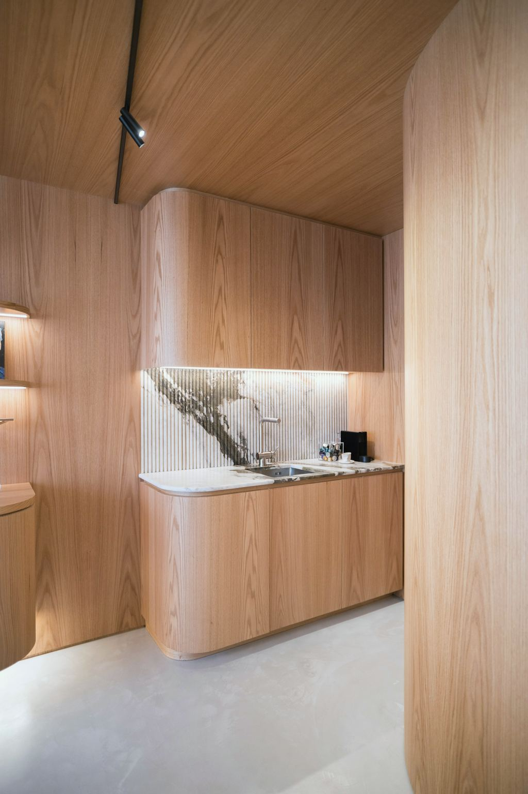

Was wir bauen und was es kostet
Die Preise sind Richtwerte inklusive 20 % USt. und Montage in Wien und im Bezirk Mödling. Verbindlich wird es nach dem Aufmaß, mit Festpreis.

Möbeltischlerei
Einzelmöbel, gebaut für genau einen Platz in Ihrer Wohnung.
Ein Esstisch, der zwischen Fenster und Kredenz genau zehn Leuten Platz lässt. Ein Bett mit Laden, die unter der Dachschräge noch aufgehen. Ein Schreibtisch für die Nische, in der sonst nur Kartons stehen.
Wir bauen Einzelstücke und kleine Serien, etwa sechs gleiche Sessel für einen Tisch. Verbindungen sind gezapft, gedübelt oder verschraubt, je nachdem, was hält und was sich später wieder zerlegen lassen soll.
- Typische Aufträge
- Esstische
- Kredenzen und Sideboards
- Betten mit Laden
- Schreibtische
- Sitzbänke
- Holz und Material
- Eiche, Nuss, Esche, Kirsche, Lärche. Geölt, gewachst oder lackiert.
- Zeitrahmen
- 6 bis 10 Wochen ab Freigabe
| Esstisch Eiche massiv, 220 × 95 cm, geölt | ab 3.400 € |
|---|---|
| Kredenz Nuss, 180 cm, vier Türen | ab 4.900 € |

Küchen & Einbauschränke
Küchen und Kästen, die die ganze Nische nutzen, bis unter die schiefe Decke.
Im Altbau ist keine Wand gerade und keine Decke waagrecht. Ein Kasten von der Stange lässt dort oben eine Lücke oder wird mit einer Blende kaschiert. Wir messen jede Ecke, zeichnen das Gefälle ein und passen die letzte Leiste vor Ort an.
Bei Küchen planen wir Arbeitshöhe, Laden und Geräte nach Ihnen, nicht nach dem Katalog. Elektrogeräte bauen wir von allen gängigen Herstellern ein, Sie kaufen sie selbst oder über uns.
- Typische Aufträge
- Küchen in Alt- und Neubau
- Einbau- und Kleiderkästen
- Vorzimmerkästen
- Kästen unter Dachschrägen
- Hauswirtschaftsräume
- Holz und Material
- Fronten aus Massivholz oder furnierter Tischlerplatte, Korpusse aus Tischlerplatte. Arbeitsplatten aus Holz, Stein oder Kompaktplatte.
- Zeitrahmen
- Küche 10 bis 14 Wochen, Einbauschrank 6 bis 8 Wochen ab Freigabe
| Küche, 4,5 m Zeile, Fronten Eiche, ohne Geräte | ab 19.000 € |
|---|---|
| Einbauschrank raumhoch, 2,4 m breit, Eiche furniert | ab 6.500 € |

Innenausbau
Bücherwände, Vorzimmer und Verkleidungen, eingebaut statt hingestellt.
Innenausbau heißt: Das Möbel wird Teil des Raums. Eine Bücherwand läuft um das Fenster herum, eine Wandverkleidung versteckt Leitungen, eine Stiege bekommt neue Stufen, ohne dass der Rest der Wohnung staubt.
Wir koordinieren, was drumherum nötig ist: Elektriker für die Beleuchtung im Regal, Maler für die Anschlüsse. Sie haben einen Ansprechpartner.
- Typische Aufträge
- Bücherwände und Regalsysteme
- Wandverkleidungen
- Innentüren
- Stiegen und Stufen
- Fensterbänke
- Holz und Material
- Massivholz und furnierte Platten, lackierte Oberflächen in jeder RAL-Farbe.
- Zeitrahmen
- 6 bis 12 Wochen ab Freigabe
| Bücherwand raumhoch, je Laufmeter, Eiche | ab 1.450 € |
|---|---|
| Innentür mit Zarge, furniert, eingebaut | ab 1.300 € |

Restaurierung
Alte Möbel und Altbau-Details wieder benutzbar machen, ohne sie neu aussehen zu lassen.
Peter Hallwirth restauriert seit über 40 Jahren. Er arbeitet so, dass man es später wieder rückgängig machen kann: Glutinleim statt Kunstharz, Schellackpolitur statt Lack, Beschläge werden aufgearbeitet und nicht getauscht.
Bevor wir anfangen, schauen wir uns das Stück in der Werkstatt an und schreiben auf, was wir tun würden und was nicht. Der Kostenvoranschlag ist kostenlos.
- Typische Aufträge
- Kommoden, Kästen, Tische
- Kastenfenster-Flügel
- Kassettentüren
- Furnier- und Intarsienreparatur
- Schellackpolitur
- Holz und Material
- Originalholz ergänzen wir mit abgelagertem Altholz aus dem eigenen Lager.
- Zeitrahmen
- 3 bis 8 Wochen, je nach Befund
| Kommode, Befund und Kostenvoranschlag in der Werkstatt | kostenlos |
|---|---|
| Kommode um 1900, Leimfugen, Furnier, Politur | meist 900 bis 1.800 € |
Richtwerte inklusive 20 % USt., Montage in Wien und im Bezirk Mödling inklusive. Preise für Wohnungen bis zum 3. Stock ohne Lift, darüber nach Aufwand.
Was bei jedem Auftrag gleich ist
Vom ersten Anruf bis zur Montage. Bezahlt wird in zwei Teilen, vor der Freigabe kostet Sie nichts etwas.
-
ca. 1 Stunde
Aufmaß bei Ihnen
Wir kommen vorbei, messen den Raum, auch die Wände, die nicht gerade sind, und hören zu. In Wien und im Bezirk Mödling kostenlos.
-
2 Wochen
Plan und Angebot
Sie bekommen eine Zeichnung im Maßstab mit Holz, Oberfläche und allen Maßen, dazu einen Festpreis.
-
so lange Sie brauchen
Freigabe
Sie ändern, so oft Sie wollen. Erst wenn Sie den Plan unterschreiben, bestellen wir Holz. Dann sind 30 % fällig.
-
6 bis 14 Wochen
Bau und Montage
Gebaut wird in unserer Werkstatt in Liesing, montiert von denselben Leuten, die gebaut haben. Der Rest wird nach der Montage fällig.
Am schnellsten geht es am Telefon 01 890 12 34
Sie sprechen mit Franz Hallwirth oder Lena Hofer, Montag bis Freitag von 7:30 bis 16:30 Uhr. Stehen wir gerade an der Maschine, rufen wir am selben Tag zurück.